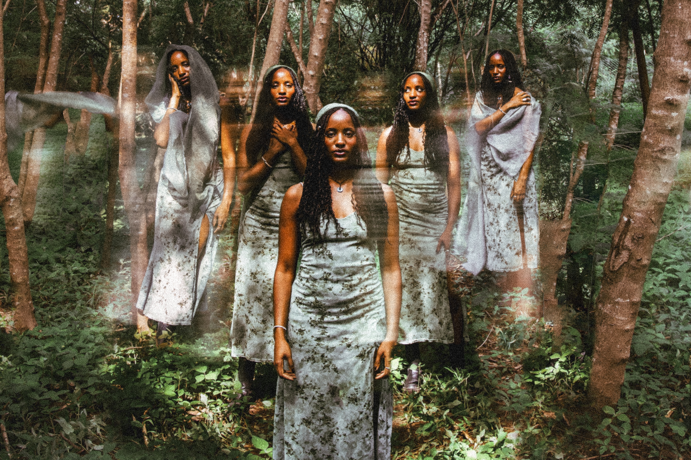

BROWN LOTUS RECORDS PRESENTS · INDEPENDENT MUSIC ARCHIVE
For the sounds that move beyond borders.
A constellation of independent voices, intimate performances, moving images and stories in sound.

FEATURED ARTIST / JUNE ON THE MOON01 / THE COLLECTIVE
Artist constellations.
02 / THE VISUAL ARCHIVE
Music in motion.
03 / THE STORY
Rooted in tradition. Open to the unknown.
Sessions on the Moon is an evolving home for the artists and collaborators who shape our music experiences. Discover the voices, watch the films and follow the stories behind the sound.
A digital concept developed from the June on the Moon press kit. Additional artist profiles will be added as artists join the archive.